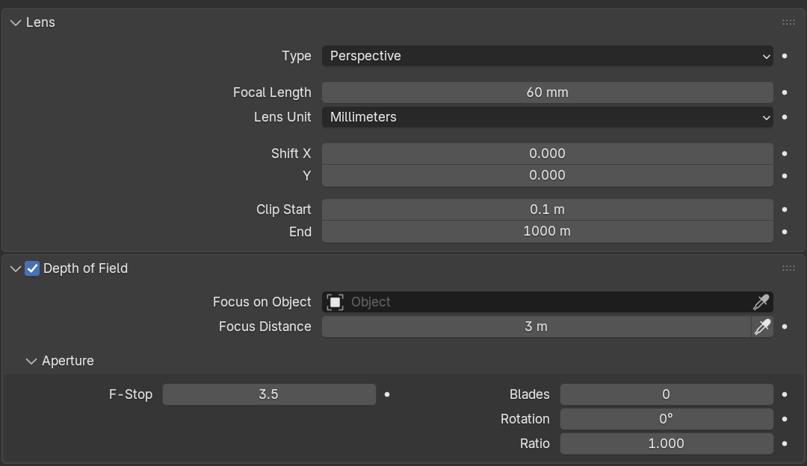

Render your first scene
Use ovrtx to preview your scene, render a camera view and save an image. Install the add-on before you begin.
1. Open a scene
Open a demo scene or create one with an object, a light and a camera. Blender's default scene includes all three. Save a working copy before making changes.
For a repeatable reference render, follow the Junk Shop verification workload. It specifies the scene download, camera, resolution and sample count.
2. Preview the scene
- In Render Properties, choose Render Engine →
ovrtxExample. - Switch the 3D Viewport to Rendered shading.
- Wait for the image to appear. The first render can take longer while the renderer starts.
- Orbit the view. With Sync Blender View enabled, the rendered view follows you.
- Try moving an object or changing a light. Undo the change if you want to keep the original scene.
If the image stays blank, read Render Properties → ovrtx Example → ovrtx Session.
3. Render and save a still
- Press Numpad 0, or choose View → Cameras → Active Camera, to check the camera view.
- In Output Properties, set the resolution. Use a smaller size for a quick first render.
- Press F12, or choose Render → Render Image.
- When the render finishes, choose Image → Save As in the Render Result window.
Save your .blend file separately. Saving the scene does not save the rendered image.
Adjust the camera
Select the camera and open Camera Properties. Change Focal Length to adjust how much of the scene fits in the frame.
For a blurred background, enable Depth of Field. Choose a Focus on Object target or set Focus Distance. A lower F-Stop gives stronger blur.


Render settings
Start with the defaults. Change one setting at a time so you can see its effect.
| Setting in Render Properties | When to change it |
|---|---|
| Minimum Samples / Maximum Samples | Increase the sample budget to reduce noise. Higher values can take longer. |
| Max Bounces | Allow light to reflect or pass through more surfaces. |
| Max Specular and Transmission Bounces | Adjust the limit for reflections and transparent materials. |
| Firefly Filter | Reduce isolated bright specks. |
| Final Render Anti-Aliasing | Smooth jagged edges. Use 1× for speed or the default 2×2 for better edges. |
| Viewport Anti-Aliasing | Smooth viewport edges. The default 1× keeps navigation faster. |
| DLSS Super-Resolution | Switch between the default and Performance settings. Unchecking it does not fully disable DLSS in this release. |
2×2 renders at twice the width and height, then reduces the image to your output size. It processes four times as many pixels. More samples alone may not fix jagged edges.
Color management and HDR output
Open Render Properties → ovrtx Example → Color Management → Color Presentation.
| Mode | Use it for |
|---|---|
| LDR display passthrough | An image with its display colors already applied. Blender's additional display adjustments are disabled. |
| Scene-linear HDR | Adjusting the image with Blender's View Transform, Look, Exposure and Gamma, or saving an HDR file for compositing. |
To save HDR, select Scene-linear HDR, render with F12, then save as OpenEXR. This retains a wider brightness range for later editing.
This release outputs one LDR or HDR image at a time. Transparent backgrounds and extra passes such as depth and normals are unavailable. Some Blender shaders and volumes are unsupported, so materials may look different from Cycles or EEVEE.
Render an animation
- If the motion uses physics, bake it first.
- Set the frame range and frame rate. Check the active camera and output resolution.
- In Output Properties, choose an output folder and PNG or OpenEXR image sequence.
- Render one frame with F12 to check the result.
- Choose Render → Render Animation.
An image sequence keeps completed frames if rendering stops. Assemble the frames into a movie using Blender's Video Sequencer after rendering finishes.
Troubleshooting
| Problem | What to do |
|---|---|
| F12 shows a different view | Check the active camera with Numpad 0 and confirm the output aspect ratio. |
| Colors or brightness look wrong | Check Color Presentation and Blender's display settings. |
| A material looks different from Cycles | Try a simpler material. Not all Blender shader nodes are supported. |
| Edges are jagged | Increase Final Render Anti-Aliasing or Viewport Anti-Aliasing. |
| An edit does not appear | Read ovrtx Session. The change may require a restart or may be unsupported. |
| Rendering stops updating | Try Reconnect ovrtx Session, then Restart ovrtx Worker. |
For a persistent error, keep its message and the reported worker.log and ovrtx.log files. Open ovrtx Logs is available when file logging is enabled. Remove private paths and scene details before sharing logs.